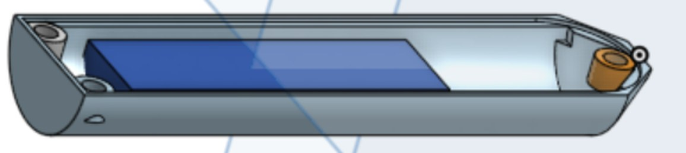
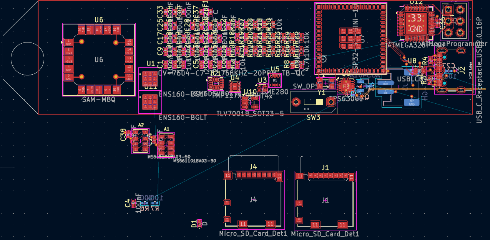

IMUs
Measure acceleration and rotation as the probe climbs, swings under the balloon and falls. Two units cross-check each other.
Projects / Weather balloon payload
A low-cost probe that rides a weather balloon, logs the atmosphere on the way up, and fits inside a 50 mL test tube.
Weather balloons carry instruments into the upper atmosphere, and the instruments are usually the expensive part. This payload is meant to be cheap enough to build again and again, while still recording a full picture of each flight: how the probe moves, what the air is made of, its pressure, temperature and humidity, and exactly where every reading was taken.
The hard constraint is size. The board, battery and housing all have to fit inside a 50 mL test tube, 25 mm across and 100 mm long, which makes it light and gives it a tough, sealed shell for free.
Five kinds of sensor and two places to store what they measure.
Measure acceleration and rotation as the probe climbs, swings under the balloon and falls. Two units cross-check each other.
Track air quality, including volatile organic compounds, as the probe rises.
ENS160Measures air pressure, which gives altitude and the vertical profile of the flight.
MS5611Ties every reading to a place and an altitude, and helps find the probe after landing.
u-blox SAM-M8QShows how the air cools and dries with height.
BME280Every reading is logged to both cards, so one failed card doesn't cost the flight.
Each sensor reports to the microcontroller, which timestamps the readings and writes them to both microSD cards.
The housing and the board were designed together around the tube.


The board layout and the housing are in progress. Photos of the build, flight data and the design files will be added here as the project moves forward.